ECE 5730 · DIGITAL SYSTEMS DESIGN USING MICROCONTROLLERS
Lab 3 Report
PID Control of a 1D Helicopter
Amber Li | Ivan Huang | Zarif Karim
Thursday lab section · 11.08.2026
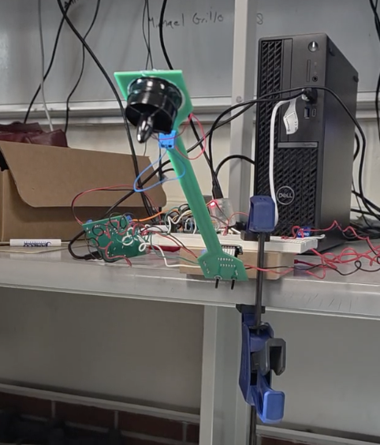
The arm holding +30° above horizontal during the demo sequence.
Contents
1 Introduction
2 Mathematical and Physical Background
2.1 Measuring angle · 2.2 Complementary filter · 2.3 Plant model · 2.4 PID control ·
2.5 Practical PID problems · 2.6 PWM and the motor circuit · 2.7 Fixed point · 2.8 I2C
3 Design and Testing Methods
3.1 Build order and debugging · 3.2 Motor driver · 3.3 PWM · 3.4 IMU · 3.5 Control ISR ·
3.6 Overcurrent protection and anti-windup · 3.7 Demo sequence · 3.8 VGA · 3.9 Serial · 3.10 Wiring
4 Documentation
5 Results
5.1 Final gains · 5.2 Demo sequence · 5.3 Settling times · 5.4 Hover duty vs. angle ·
5.5 Stable range · 5.6 Earlier tuning runs
6 Conclusion
7 Answers to the Lab Report Questions
8 Work Distribution and AI Use
References
Appendix A Commented Code Listing
Appendix B AI Prompt Log
1 Introduction
We built and controlled a one-degree-of-freedom "helicopter": a lever arm on a hinge with a ducted motor at the
free end. An MPU-6050 IMU on the arm reports acceleration and angular rate over I2C. A Raspberry Pi Pico 2 (RP2350)
fuses the two with a complementary filter to estimate the arm angle, and a PID controller running at exactly 1 kHz
(inside the PWM-wrap interrupt) sets the motor's PWM duty cycle through an optically isolated MOSFET driver.
The target angle and all three gains are set from a serial terminal and take effect on the next 1 ms cycle.
A VGA display plots the measured angle against the target and the controller's motor command in real time.
A pushbutton runs the demo: while it is held, the motor is off and the arm hangs at −90°; on release the
target steps to 0°, then +30° at 5 s, −30° at 10 s and 0° at 15 s, using whatever gains are
loaded. With our final gains (Kp = 80, Ki = 0.2, Kd = 12) the arm reached every
demo angle and settled in 1–3.6 s, and stayed stable from −90° to about +50°.
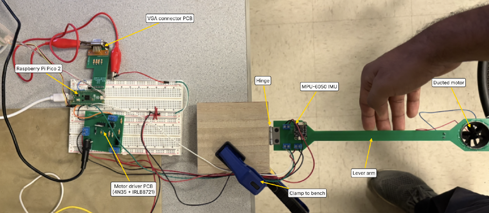
Figure 1. The rig from above: Pico 2 and VGA adapter on the breadboard, the motor-driver PCB,
the hinge clamped to the bench, the IMU next to the hinge and the ducted motor at the end of the arm.
Angle convention. Throughout the report and code, 0° is the arm horizontal, −90° is hanging
straight down (the handout's −1.57 rad starting position) and positive angles are above horizontal. The
course's analytical notes measure θ from hanging down instead; where we use their equations,
θ = φ + 90°, where φ is our angle.
2 Mathematical and Physical Background
2.1 Measuring angle: accelerometer vs. gyroscope
An accelerometer measures specific force, the acceleration it feels minus gravity. At rest it reads
1 g pointing up (the normal force from the table), and in free fall it reads zero. When the arm is still,
the measured vector is gravity itself, so its direction in the IMU frame gives the tilt (Figure 2a). The arm
pivots about the IMU's y axis, so gravity moves between the x and z axes. Because the arm swings through
140° and more, the small-angle approximation θ ≈ ax/g is useless here and we use the full
four-quadrant arctangent:
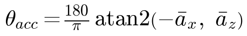
The bars mean the readings are low-passed first (Section 2.2). The accelerometer angle never drifts, because gravity
is always there, and its noise is roughly zero-mean, so it is unbiased on average. But any other acceleration
looks like a tilt: motor vibration and the arm's own swinging make it very noisy once the motor runs
(Figure 19).
The gyroscope measures angular rate ωy (°/s). Integrating it gives an angle that is very smooth over
short times and ignores vibration, but every gyro has a small bias b, so the integral drifts without bound
(dead reckoning):
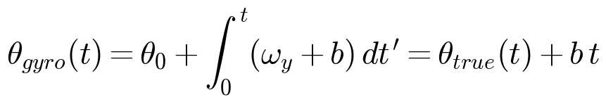
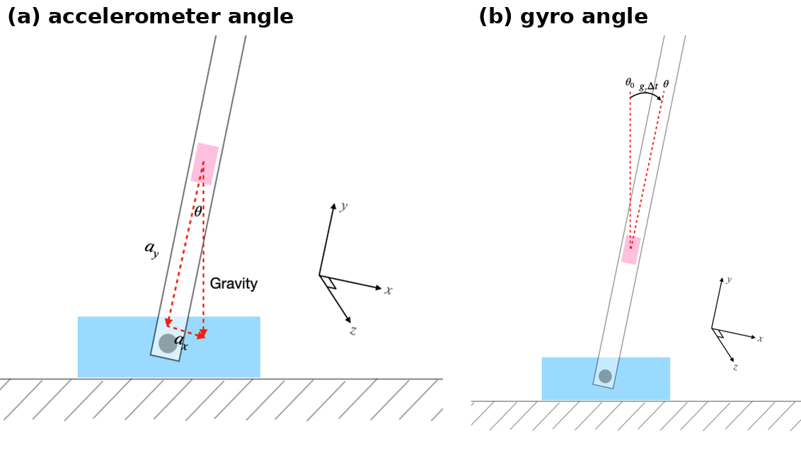
Figure 2. (a) The accelerometer angle comes from the direction of gravity. (b) The gyro angle
adds rate × Δt each step. From the course complementary-filter notes, which label the axes ay
and gz; on our board the matching axes are az and gyro y.
2.2 The complementary filter
Each sensor fails where the other is good: the accelerometer is trustworthy at low frequency (long term), the
gyro at high frequency (short term). Every 1 ms the ISR adds the gyro's angle change to the previous estimate and
nudges the result 0.1% toward the accelerometer angle (Figure 3):
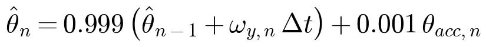
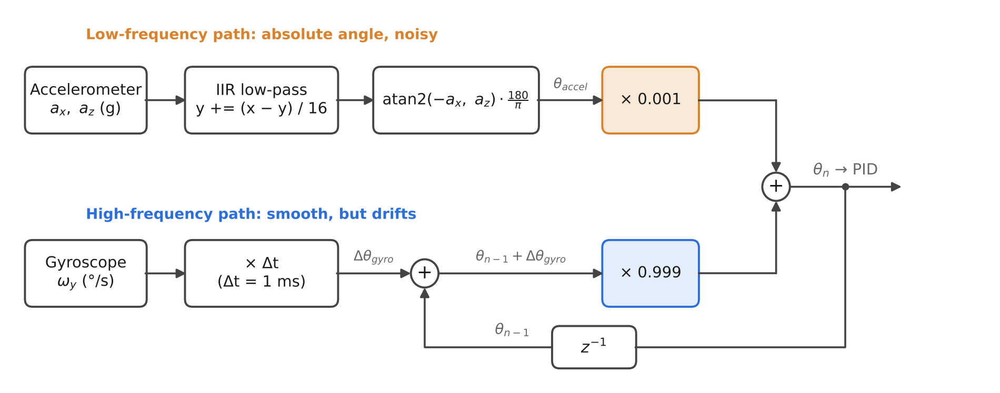
Figure 3. Our complementary filter as implemented in on_pwm_wrap().
Why it is called complementary. Taking this update in the continuous limit (α = 0.999,
Δt = 1 ms) gives a first-order low-pass on the accelerometer and a first-order high-pass on the gyro angle
with the same time constant:
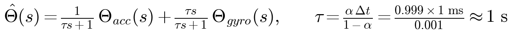
The two filters add to exactly 1, so the true angle passes through undistorted at every frequency; only each
sensor's noise is filtered. Below about 1/(2πτ) ≈ 0.16 Hz the estimate follows the accelerometer;
above it, the gyro. Two consequences follow directly from the transfer function:
Gyro bias becomes a small constant offset instead of drift. A constant bias b integrates to a
ramp b/s²; through the high-pass it settles to
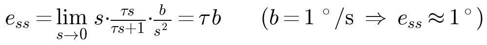
An uncalibrated MPU-6050 can have a bias of a few °/s, so subtracting a measured bias at start-up would be the
next improvement (Section 6).
The weight trades noise for bias. The notes suggest 0.99/0.01; we used 0.999/0.001, which moves the
crossover down ten times and keeps more motor vibration out, at the cost of a larger bias offset (τ = 1 s instead
of 0.1 s). With the motor running, our accelerometer readout differed from the complementary angle by 2–5° at any
instant while the complementary trace stayed smooth (compare the two readouts in the screenshots of Section 5.2).
Low-pass before atan2.atan2 is nonlinear, so zero-mean noise on ax
and az does not average out after it: the noisy angle comes out biased. We therefore filter the raw
axes first with a first-order IIR, the digital version of an RC filter (forward-Euler discretisation, as derived on
the course Display page):
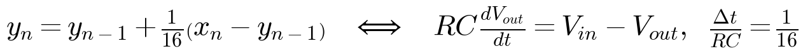
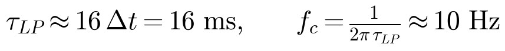
This adds about 16 ms of lag, but only to the accelerometer path, which carries 0.1% weight. The gyro path, which
dominates at control frequencies, has no lag. This is why we did not simply low-pass the accelerometer and skip the
gyro: a filter slow enough to remove vibration would add tens of milliseconds of phase lag inside the control loop,
and lag is exactly what destabilises a feedback loop (Section 2.4).
2.3 Modeling the plant
The analytical PID notes model the system as a motor (voltage to rotor speed ω) in series with the arm
(ω to angle). Motor. An armature with resistance R, inductance L and back-EMF constant K, driving
inertia J with viscous drag b, gives a two-pole low-pass:
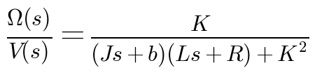
Both poles are fast compared with the arm, so from the arm's point of view the motor speed follows the applied
voltage almost instantly. The arm dominates the loop dynamics.
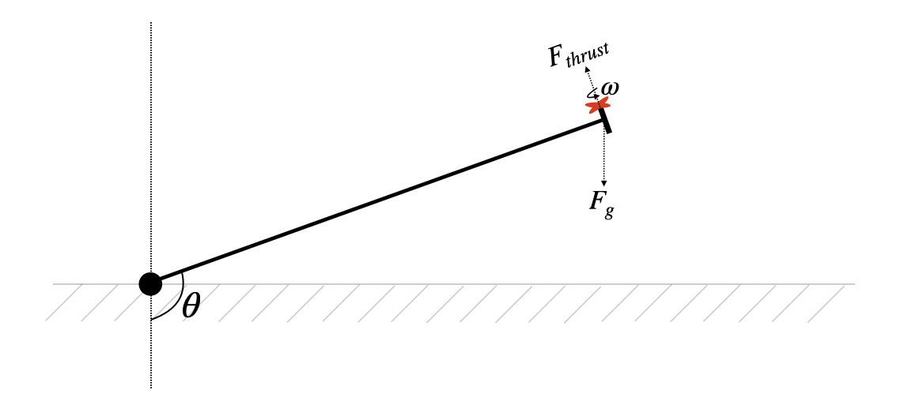
Figure 4. Thrust and gravity on the arm, with θ measured from hanging down. From the course
PID notes.
Arm. Thrust is roughly KTω², always perpendicular to the arm; gravity acts on the motor
mass m at distance L; hinge friction is Kfθ̇. Treating the arm as a point mass at its end,
the torque balance is
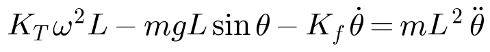
Linearising about an operating point (θ0, ω0) and taking the Laplace transform:
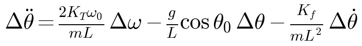
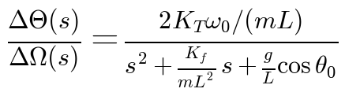
This is a lightly damped resonance whose "spring constant" is (g/L) cos θ0. Three things follow,
and each showed up in lab:
Hanging down (θ0 = 0) the arm is a pendulum with natural frequency √(g/L): 5.7 rad/s
(0.9 Hz) for the notes' 0.3 m arm. We did not measure our arm's length precisely.
Gravity's stiffness changes sign at horizontal (θ0 = 90°, cos = 0). Below horizontal
gravity pulls the arm back toward equilibrium; above it, gravity pushes the arm further away, so above horizontal
only the controller keeps the arm up.
The plant gain 2KTω0/(mL) depends on the operating point. At angles that need
less thrust the motor spins slower, so each extra duty count moves the arm less. One set of fixed gains cannot be
ideal at every angle, which is part of why the stable range is limited (Section 5.5).
Thrust needed to hover. Setting all derivatives to zero in the torque balance:
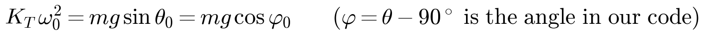
So the ideal point-mass arm needs the most thrust at horizontal and equal thrust at ±30°
(cos 30° = 0.87). On our rig the duct hangs below the arm (photo in Figure 14), so the centre of
mass sits a distance d below the arm's centre line. The gravity torque then becomes
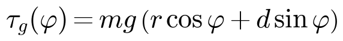
which needs more thrust above horizontal than below it. Section 5.4 shows our measured hover duties have
exactly this asymmetry.
2.4 PID control
Open-loop control (a lookup table from desired angle to duty cycle) fails here because the thrust needed changes
with the supply voltage, motor temperature, air density and the arm's wiring, and nothing corrects a bump. We close
the loop instead (Figure 5): measure the angle, compare it with the target, and let the controller turn the
error into a motor command.
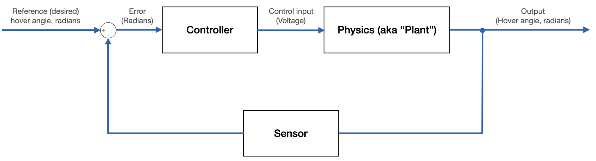
Figure 5. Closed-loop control. From the course PID notes.
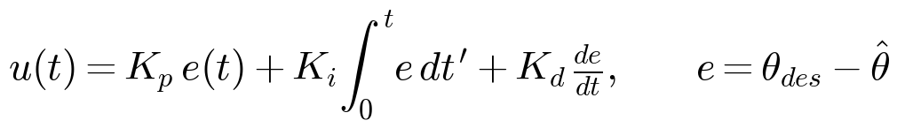
Proportional reacts to the error right now (Figure 6a). Alone it leaves a steady-state error:
holding the arm up needs a non-zero command, and P only produces one if the error is non-zero. Too much
Kp makes the arm oscillate.
Integral reacts to the accumulated error, the area under the curve (Figure 6b). It removes
steady-state error: at rest P ≈ 0 and D ≈ 0, so the I term alone supplies the hover thrust. It adds
90° of phase lag, so Ki is kept small.
Derivative reacts to how fast the error is changing. It opposes fast approaches, which adds damping.
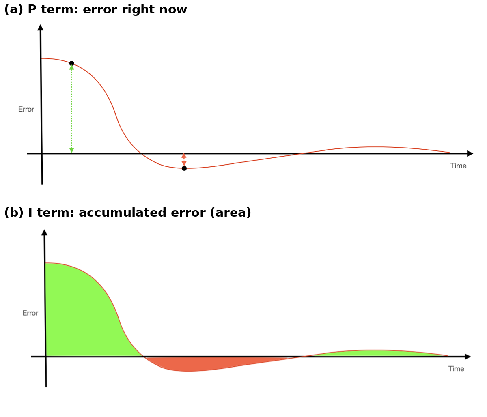
Figure 6. (a) P acts on the error at this instant. (b) I acts on the area under the error curve,
positive and negative. From the course PID notes.
D from the gyro. The target only changes in steps, so between steps its derivative is zero and
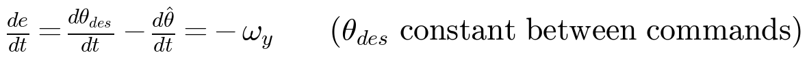
We feed the gyro rate straight into the D term (the approach recommended in lecture) instead of differencing the
angle estimate. Differencing multiplies noise by its frequency, and at 1 kHz the change in angle from one sample to
the next is smaller than the noise. Using −ωy also means a setpoint step produces no
derivative spike ("derivative kick"), because the gyro does not see the target.
Discrete law as implemented. Every 1 ms the ISR computes
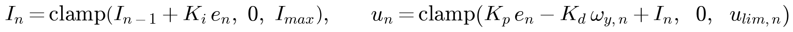
where ulim is the slew-limited ceiling of Section 3.6. The integrator accumulates Kie (already in
duty counts) rather than Σe, so changing Ki never makes the output jump. In physical units our final
gains are
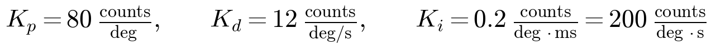
Written as a single transfer function, the PID controller is two zeros and an integrator. Its integral and
derivative times show which timescales each term acts on:
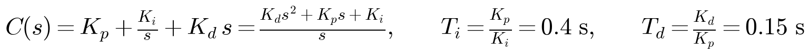
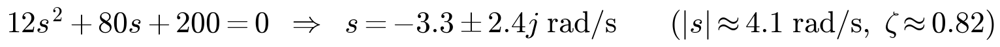
The controller's zeros sit at about 4 rad/s (0.65 Hz), just below the arm's pendulum resonance, which is where the
analytical notes say the derivative's phase lead is needed.
What each gain does to stability (from the Bode-plot analysis in the analytical notes). The combined plant
is type 0 (no free integrator). Raising Kp lifts the whole magnitude curve: the response gets faster and the
steady-state error shrinks, but the gain margin falls. When the loop has a gain of 1 at −180° of phase the
arm oscillates forever, which we saw at Kp = 120 (Figure 18). Kd adds up to +90°
of phase lead around the resonance, which restores margin and lets Kp go higher. Ki adds a free
integrator (type 1, zero steady-state error) at the cost of 90° of phase at low frequency.
2.5 Practical PID problems
Table 1 lists the failure modes the course notes warn about and what our final code does about each.
Figure 7 shows the worst one.
Problem
Our fix (final code)
Integrator windup: error keeps accumulating while the arm is held or the motor is saturated, so the arm
overshoots badly when released
Conditional integration: I only grows if the output is not already at its
limit. I is floored at 0 and capped at i_max, and cleared whenever closed loop is off (button held,
c 0, manual duty) or Ki is set to 0
Derivative noise: differentiating multiplies noise by its frequency
D uses the gyro rate; no numerical derivative
Tiny derivative signal: the per-sample angle change at 1 kHz is below the noise
Same: the gyro measures rate directly
Derivative kick on a setpoint step
D acts on the measurement (−ωy), not on the error
Accelerometer noise from motor vibration, and atan2 bias
IIR low-pass (τ = 16 ms) before atan2, then only 0.1% weight on the accelerometer
Motor can only push up; negative command is meaningless
Output clamped to [0, 6000]; I floored at 0
Inrush current when the command jumps from 0 to full
Output may rise at most 20 counts per ms (Section 3.6)
Table 1. PID implementation problems and our fixes.
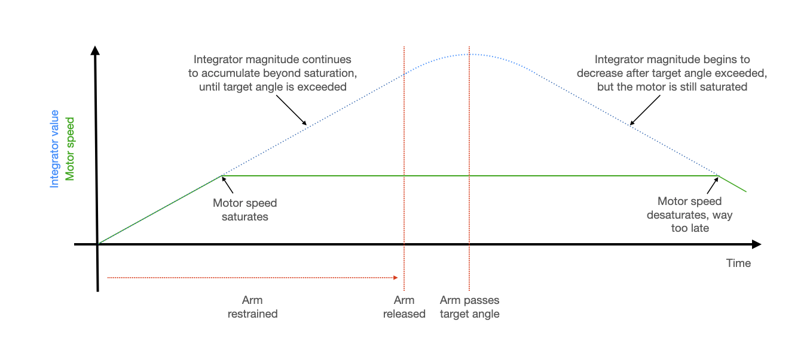
Figure 7. Integrator windup: the integrator keeps growing past saturation, so the motor stays
saturated long after the arm passes the target. From the course PID notes.
2.6 PWM and the motor circuit
PWM. GPIO 4 is channel A of PWM slice 2. The slice's counter runs at fsys/CLKDIV = 6 MHz and wraps
after 6001 counts:
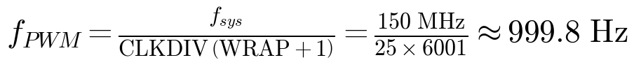
The duty cycle is the channel level divided by 6001, so the command has 6001 steps (0.017% each). The motor's
electrical (L/R) and mechanical time constants are much longer than the 1 ms period, so it responds to the average
voltage:
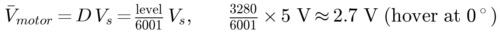
The low bandwidth of the 4N35 optoisolator is what keeps the PWM near 1 kHz: its phototransistor needs tens of
microseconds to switch, so a much faster PWM would never fully turn the MOSFET on or off. The same wrap event drives
our control interrupt, so the controller runs at exactly the PWM rate with no separate timer to keep in sync.
Why the motor needs protection. A motor's armature is an inductor. Switching off its current quickly produces
a large voltage spike. The notes' example, 1 mH carrying 1 A switched off in 10 ns, gives
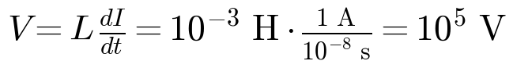
The 1N4001 flyback diode across the motor gives that current a safe path. The brushes also produce high-frequency
noise (above 100 kHz), which the 0.1 µF ceramic capacitor shunts (electrolytics are too slow). Finally, the 4N35
isolates the Pico completely: the two sides share no ground, and only light crosses between them (Section 3.2).
2.7 Fixed-point arithmetic
All ISR math except atan2 is fixed point. fix15 is a signed 15.16 number in a 32-bit int
(Figure 8): range ±32,768 with a resolution of 1/65,536 ≈ 1.5 × 10−5.
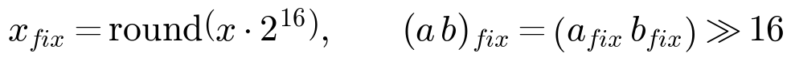
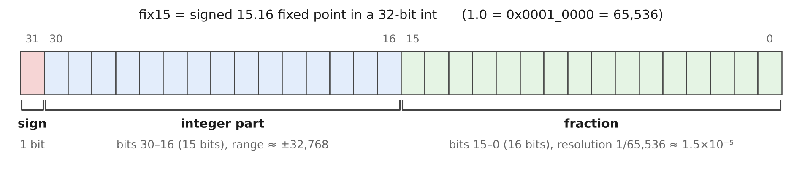
Figure 8. fix15 (15.16) bit layout used by mpu6050.h.
Multiplication uses a 64-bit product then shifts right by 16. In the PID code we shift Kp·e
right by 32 instead, which turns the product of two 15.16 numbers directly into an integer duty count.
Sensor scaling (in mpu6050.c): at ±2 g the accelerometer gives 16,384 counts per g;
shifting left by 2 gives 65,536 = 1.0 g. At ±250 °/s the gyro gives 131 counts per °/s;
multfix15(raw, 500<<16) = raw × 500 / 65,536 ≈ raw / 131.
Constants are pre-scaled and slightly rounded: 0.001 → 65 (really 0.000992) and 0.999 → 65,470.
The gyro step is therefore about 0.8% short, and the PWM period is 1.0002 ms rather than 1 ms. The accelerometer path
corrects both slowly, which is another reason the filter needs a little accelerometer weight.
Two bugs we hit came straight from mixing formats (Section 3.1): a stray set of 1.15 macros (1.0 = 32,768) read
the driver's 15.16 data at half scale, and passing 180/M_PI as a fix15 argument truncated it to the integer
57. The fix was to use the header's oneeightyoverpi constant (3,754,936 = 57.2958 × 65,536).
2.8 I2C
I2C is a two-wire, open-drain bus: devices only ever pull SDA and SCL low, and pull-up resistors bring them high, so
any device can hold the bus. Each byte is 8 data bits plus an acknowledge bit. A read of the MPU-6050 writes the
start register address, then issues a repeated start (keeping control of the bus) and reads 6 bytes; the IMU
auto-increments its register pointer. At 400 kHz:
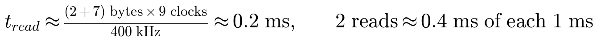
So the I2C reads use about 40% of each control period, which is why the rest of the ISR is lean fixed-point code and
all drawing runs on the other core. Open-drain also explains our worst hardware bug: if the Pico resets in the middle
of a read, the still-powered IMU can be left holding SDA low and every later transfer hangs (Section 3.1).
3 Design and Testing Methods
3.1 Build order and debugging
We built and tested in stages, verifying each one on the VGA screen before closing the next loop: motor driver PCB
and open-loop PWM (week 1); IMU, complementary filter, display and P control (week 2); D, I, the demo button and
overcurrent protection (week 3). Most of our debugging time went to start-up hangs and sensor conventions rather than
control code:
Symptom
Cause
Fix
Fan at full speed even at duty 0 after merging the PWM demo into the IMU demo
The program never reached
the PWM setup: mpu6050_reset() uses blocking I2C writes and hung, leaving GPIO 4 floating
Found by
noticing that VGA and serial were also dead; IMU wiring re-seated
VGA blank, serial dead, again with the wiring fine
Stuck I2C bus: the IMU held SDA low after a reset
in mid-transfer. Reflashing doesn't clear it, a power cycle does
Bus recovery at start-up: clock SCL up to 9
times until the IMU releases SDA (main(), lines 568–586)
Angles wrong by 2×
Local 1.15 fixed-point macros overrode the driver's 15.16 macros
Removed
the local macros
Angles off by a constant factor
180/M_PI truncated to 57 when passed as fix15
Use oneeightyoverpi
Angles read 80–300° and didn't track the arm
The filter used ay, the rotation axis
(always near 0), so atan2 flipped between ±90°; plus a leftover +π offset
Use
ax, az and gyro y; remove +π so horizontal = 0°
Complementary angle jumped the wrong way, then crept to the right value
Gyro sign opposite to the
accelerometer's (the symptom described in lecture)
Add, rather than subtract, the gyro step
P-only arm settled about 10° low or bounced
P-only needs a non-zero error to hold the arm up;
higher Kp oscillates
Add D (damping), then I (removes the offset)
Table 2. Main problems found during development. Appendix B has the full AI prompt log for these sessions.
Before closing the loop we checked the filter by hand with the motor off, tilting the arm and watching both angle
traces on the VGA. This is how we caught the axis and sign problems in Table 2.
3.2 Motor driver circuit
As the handout requires, the driver is soldered on the course PCB rather than a breadboard
(Figure 9). The motor runs from its own 5 V supply through an IRLB8721 logic-level N-MOSFET whose gate
is driven at 12 V. The Pico never touches the motor side: GPIO 4 lights the 4N35's LED through 330 Ω, and the
phototransistor switches the 12 V gate supply onto the MOSFET gate.
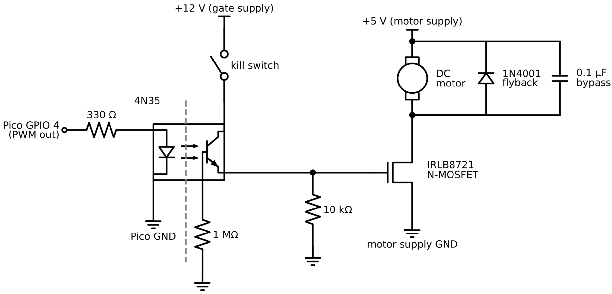
Figure 9. Motor driver schematic (as built on the course PCB). Only light crosses the 4N35;
the Pico and motor sides have separate supplies and grounds.
4N35 optoisolator: when GPIO 4 is high the phototransistor conducts and pulls the gate toward 12 V, so the
motor runs. When it is low, the 10 kΩ resistor pulls the gate to ground, so the MOSFET is off. This is the
"extra 10 k" on the PCB the course page asks about: without it the gate would float and the motor could run on its own.
The 1 MΩ base resistor drains the phototransistor's stored base charge, shortening its fall time.
1N4001 flyback diode across the motor catches the inductive spike of Section 2.6.
0.1 µF ceramic capacitor across the motor shunts brush noise.
We first drove the board with the course PWM demo and confirmed that the motor speed followed the duty cycle set
from the serial terminal, before merging the PWM code into the IMU program (where the n command now sets a
manual duty).
3.3 PWM configuration
GPIO 4 and 5 are assigned to PWM slice 2 (channel B on GPIO 5 is set to level 0 and unused). The slice wraps at
WRAPVAL = 6000 with CLKDIV = 25, giving the 999.8 Hz of Section 2.6, and its wrap interrupt
is registered as on_pwm_wrap(). The ISR only writes a new level with pwm_set_chan_level()
when the command changes. DUTY_MAX is 6000 (100%). We used a 4500 cap during early tuning and raised it back
to 6000 for the final version, which also adds the slew limit of Section 3.6.
3.4 MPU-6050 and I2C
The IMU is on I2C0 at 400 kHz (SDA GPIO 8, SCL GPIO 9) and is powered from the Pico's 3.3 V. The course driver sets
it up as in Table 3. In the ISR, mpu6050_read_raw() uses I2C calls with 250 µs timeouts,
so a glitch can cost one sample but can never hang the control loop. The one-time reset in main() still
uses blocking writes, which is why the bus recovery runs first. After the reset, we seed the accelerometer filters and the
complementary angle from the first reading, so the estimate starts at the true angle instead of creeping up from 0.
Register
Value
Effect
0x6B PWR_MGMT_1
0x00
Wake from sleep
0x19 SMPLRT_DIV
7
8 kHz / (1 + 7) = 1 kHz sample rate, matching the control rate
0x1B GYRO_CONFIG
0x00
±250 °/s (131 LSB per °/s)
0x1C ACCEL_CONFIG
0x00
±2 g (16,384 LSB per g)
0x37 / 0x38
0x10 / 0x01
Data-ready interrupt enabled (pin not used; we poll from the PWM ISR)
0x3B / 0x43
read 6 bytes each
Accelerometer x, y, z and gyro x, y, z, big-endian 16-bit
Table 3. MPU-6050 registers used by mpu6050.c.
3.5 The control ISR
Everything time-critical runs in on_pwm_wrap() on core 0, once per PWM period. Each call:
Clears the slice-2 interrupt flag and toggles GPIO 14 (a 500 Hz square wave on a scope, one edge per ISR).
Reads the IMU (accelerometer then gyro).
Low-passes ax and az (shift by 4) and computes the accelerometer angle with atan2.
Updates the complementary filter with gyro y.
Debounces the demo button and steps the demo target (Section 3.7).
If closed loop is on, runs PID with conditional integration and the slew-limited clamp; otherwise clears the integrator.
Writes the PWM level if it changed.
Every 10th call (threshold), stores the angles and duty in 530-entry circular buffers for the display.
The controller core, verbatim from imu_demo.c (comments shortened):
angle_error = desired_angle - complementary_angle ; // + means arm is below target
long long p_term = ((long long)Kp) * ((long long)angle_error) ;
long long d_term = ((long long)Kd) * ((long long)gyro[1]) ; // de/dt = -gyro y
fix15 i_step = multfix15(Ki, angle_error) ;
int pd = (int)((p_term - d_term) >> 32) ; // 15.16 x 15.16 -> integer counts
int u_limit = control + DUTY_SLEW ; // overcurrent protection: slew limit
if (u_limit > DUTY_MAX) u_limit = DUTY_MAX ;
if (!(i_step > 0 && pd + fix2int15(i_term) >= u_limit)) i_term += i_step ; // conditional integration
if (i_term > int2fix15(i_max)) i_term = int2fix15(i_max) ;
if (i_term < 0) i_term = 0 ;
int u = pd + fix2int15(i_term) ;
if (u < 0) u = 0 ;
if (u > u_limit) u = u_limit ;
control = u ;
Positive error means the arm is below the target and needs more thrust. D is subtracted because
de/dt = −ωy: an arm rising fast gets less thrust, an arm falling fast gets more.
3.6 Overcurrent protection and anti-windup
A setpoint step makes the P term jump (80 × 90° = 7200 counts on release from hanging). Stepping a stalled
motor from 0 to full voltage draws a large inrush current, because there is no back-EMF yet to limit it
(I = V/R at ω = 0). The final code therefore lets the command rise by at most DUTY_SLEW = 20
counts per 1 ms sample. Decreases are not limited, so the controller can still cut thrust instantly.
The ramp is visible in every step of Section 5.2 as a dotted vertical line in the duty trace: one plotted point
every 10 ms is a 200-count jump. 300 ms is short next to the arm's ~1 s response, so it costs little speed.
The slew limit creates a new windup risk: while the output is pinned at the ramp ceiling, the error stays large
and the integrator would keep charging. So integration is conditional: a positive I step is skipped whenever
P + D + I is already at or above u_limit. This is the clamping rule from the course PID notes (stop
integrating when the output is saturated and the error would push it further). Because of this, we left
i_max at 10000, above DUTY_MAX, so the hard cap never binds in practice. The I term is also
floored at 0, since a negative integral could only delay thrust when the arm needs it.
3.7 Demo button sequence
The button is on GPIO 15, wired to ground with the internal pull-up (pressed = low). The ISR polls it every 1 ms
and accepts a new state only after it has disagreed with the old one for 20 consecutive samples (20 ms debounce). Since
one ISR call is 1 ms, the sequence is timed by counting calls:
Time
Target and controller state
Button held
Closed loop off, duty 0, integrator cleared, target −90°: the arm hangs straight down
Release, t = 0
Closed loop on, target 0° (horizontal)
t = 5 s
Target +30°
t = 10 s
Target −30°
t = 15 s
Target 0°; the sequence ends and the controller keeps holding horizontal
Table 4. Demo sequence, run with whatever gains are currently loaded. No reset is needed.
The target is written only at the four step times, so a serial a command can still override it in
between.
3.8 VGA display
The Pico drives the monitor through the adapter PCB we soldered in Lab 2 (Figure 10): each colour bit
passes through a series resistor, forming a simple resistor DAC with the monitor's 75 Ω input. We reused the
course's double-buffered VGA driver (Figure 11): three PIO state machines generate hsync, vsync and the
4-bit colour output, and a DMA chain streams pixel data to them. At each vsync the chain swaps buffers and sets a flag,
giving the drawing thread about 16.7 ms per frame. A frame is 640 × 480 × 4 bits (two pixels per byte, 320
bytes per row), so the two buffers use about 300 kB of the RP2350's 520 kB SRAM.
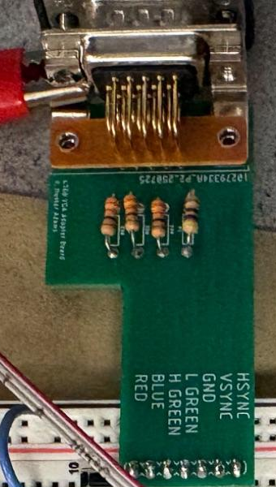
Figure 10. Our VGA adapter PCB (photographed during Lab 2).
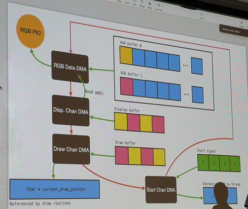
Figure 11. The VGA driver's DMA chain, from lecture.
Core 1 runs only the drawing thread, so drawing can never delay the control ISR. Each frame it redraws:
Top plot: complementary angle (yellow) and target line (light blue), −90° to +90° over 150 pixels
(1.2° per pixel).
Bottom plot: the controller's motor command control (orange/yellow), 0–6000 counts over 150
pixels (40 counts per pixel).
Text: accelerometer and complementary angles, target, Kp, Kd, duty, mode, Ki,
I max and the live I term.
With one stored point per 10 ms, the 530-pixel plot spans 5.3 s; the serial t command changes this. The plotted
command is the controller output itself, sampled every 10 ms, not a separately low-pass-filtered copy. With
Kd = 12 and the slew limit, the trace was smooth enough to read its shape clearly (Section 5.2). The course
Display page's filter, motor_disp += (control − motor_disp) >> 4, is the same IIR as our
accelerometer filter and would be a one-line addition (Section 6).
3.9 Serial interface
The serial thread on core 0 waits (without blocking the ISR) for a one-letter command, prompts for a value,
range-checks it and writes it straight into the volatile globals the ISR reads, so it takes effect on the next
1 ms cycle.
Cmd
Sets
Units / range
a
Target angle
−90 to +90° (0 = horizontal)
p
Kp
duty counts per degree, 0–6000
i
Ki
duty counts per degree per ms, 0–100 (0 also clears the integrator)
d
Kd
duty counts per °/s, 0–6000
m
Integrator cap i_max
0–6000 duty counts
c
Closed loop on / off
1 / 0 (0 also turns the motor off)
n
Manual duty cycle (turns closed loop off)
0–6000
t
Plot timestep
ISR samples per plotted point (default 10)
Table 5. Serial commands.
3.10 Wiring and system overview
Signal
RP2350 pin
Notes
VGA Hsync / Vsync
GPIO 16 / 17
PIO state machines
VGA Green lo / Green hi / Blue / Red
GPIO 18 / 19 / 20 / 21
470 Ω / 330 Ω / 330 Ω / 330 Ω
MPU-6050 SDA / SCL
GPIO 8 / 9
I2C0, 400 kHz; IMU powered from 3.3 V
Motor PWM
GPIO 4
Slice 2 channel A, to the 4N35 through 330 Ω
(PWM slice 2 B)
GPIO 5
Configured, level 0, unused
ISR timing
GPIO 14
Toggles every ISR (scope)
Demo button
GPIO 15
To GND, internal pull-up, 20 ms debounce
Table 6. RP2350 wiring connections.
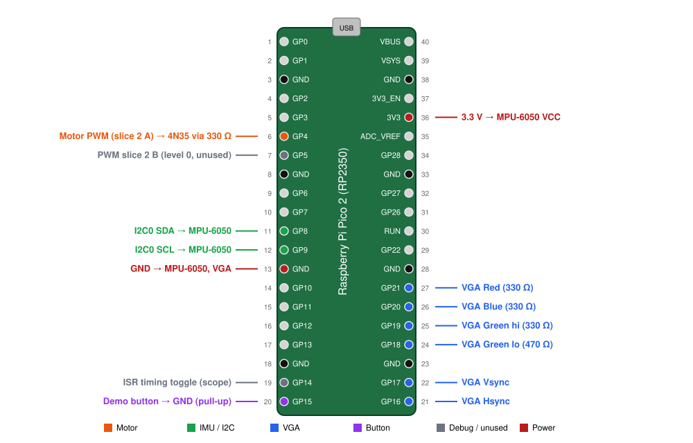
Figure 12. Pico 2 pinout with our pin assignments, coloured by subsystem.
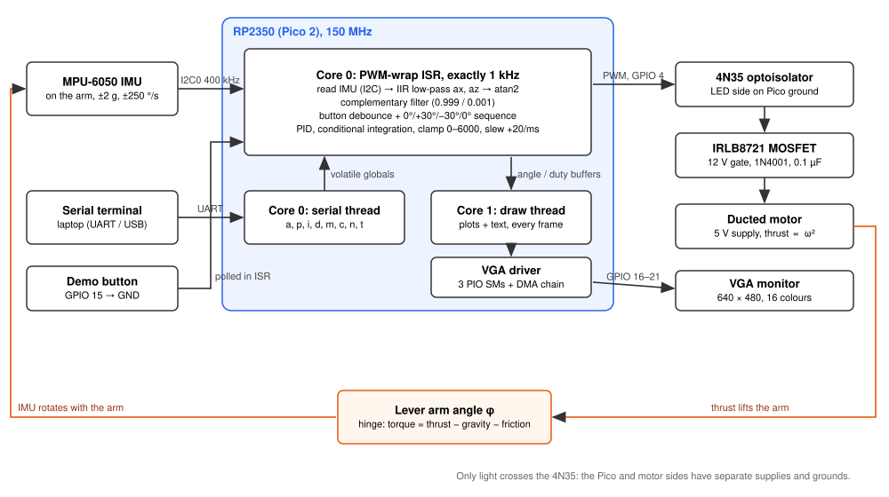
Figure 13. System block diagram. Core 0 closes the loop at 1 kHz and runs the serial thread; core 1
only draws. The orange path is the physical feedback through the arm.
4 Documentation
Where to find the drawings, listings and data the course policy asks for:
Kp = 80 counts/°, Ki = 0.2 counts/(°·ms), Kd = 12 counts/(°/s),
i_max = 10000 (non-binding; conditional integration handles windup), output 0–6000 with a +20 counts/ms
slew limit. One set of gains ran the whole demo sequence without a reset; Section 7 (Q3) explains how we chose them.
5.2 Demo sequence
Figure 14–Figure 17 show the four steps of the button demo, taken from our video of the
checked-off run. Each VGA screen (left) is paired with a photo of the arm holding that angle (right). In every screen,
the top plot is the complementary angle (yellow) against the target (blue), the bottom plot is the motor command on a
0–6000 scale, and the newest data is at the right.
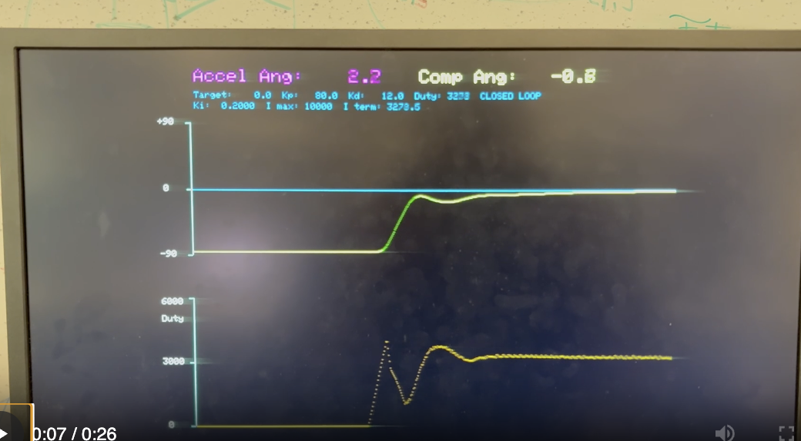
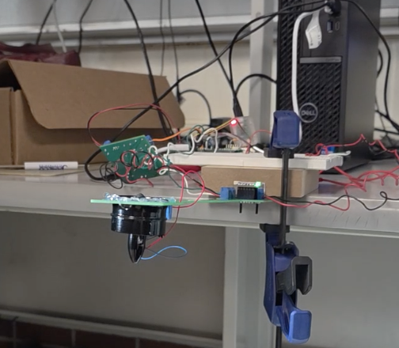
Figure 14.t = 0: release, −90° → 0°. The duty starts at 0 (motor off while
held), ramps up at the slew limit (dotted rise) to about 4100, dips to about 1300 as D brakes the rising arm, then
settles at 3278. The arm comes up from below with no overshoot, and the integrator, which started from 0, pulls in the
last few degrees. Readout at the right edge: target 0.0, complementary angle −0.8°, duty 3278,
I term 3278.5. At rest the I term supplies essentially all of the command, as Section 2.4 predicts.
Right: the arm holding horizontal (seen edge-on), with the duct hanging below the arm.
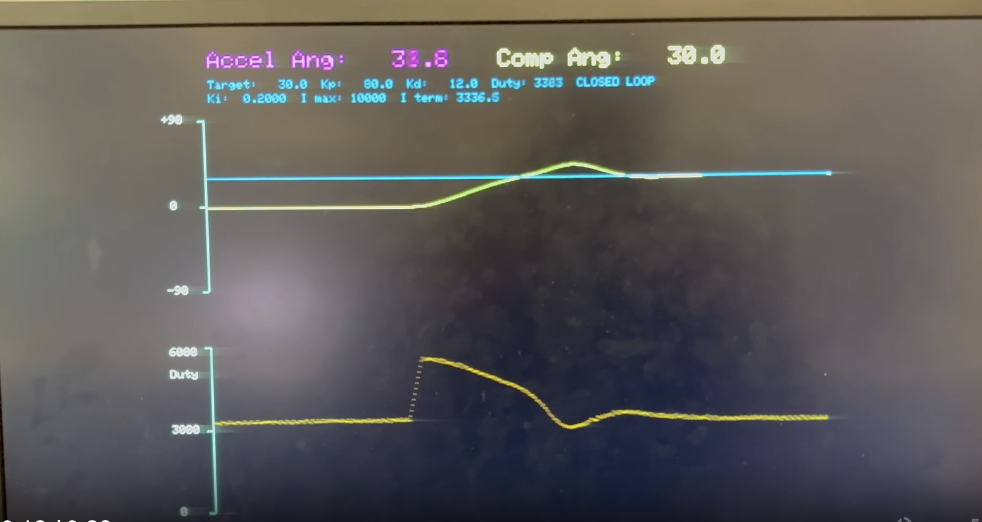
Figure 15.t = 5 s: 0° → +30°. The P kick (80 × 30° = 2400 counts on top of
the 3280-count hover command) ramps the duty to about 5800. The arm overshoots to about +46° and the duty
dips to about 3100 while the extra integral built up during the rise unwinds, then it settles at +30.0°
with duty 3383 and I term 3336.5. Right: the arm at +30°.
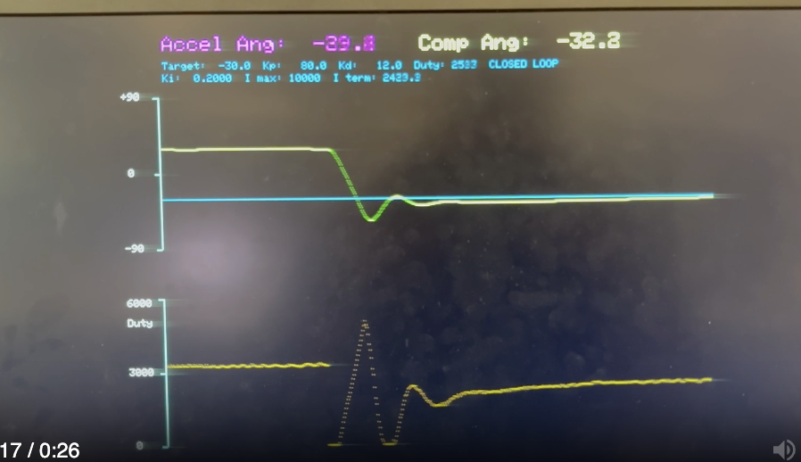
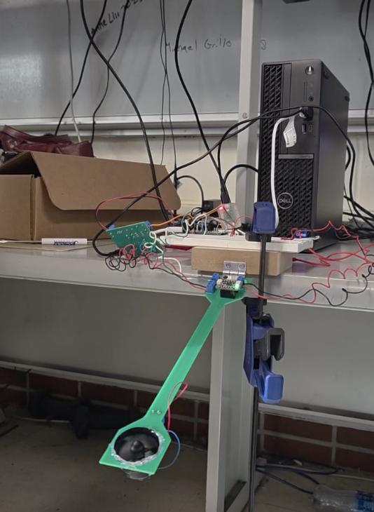
Figure 16.t = 10 s: +30° → −30°. The command drops straight to 0, because
decreases are not slew-limited and the motor cannot pull down, so gravity drives the fall. The arm passes the
target falling fast, and P and D call for a burst of about 5000 counts to catch it. The arm still undershoots to about
−56°, rebounds, and the duty hits 0 a second time before settling. The I term lost much of its stored
value during the fall, so the final approach is a slow creep: the duty is still rising (2533, I term 2433.9) with
the arm at −32.8°. Right: the arm at −30°.
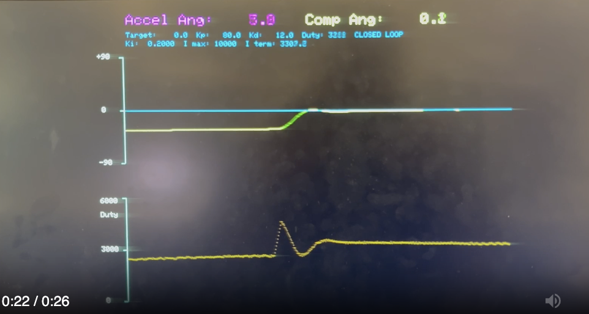
Figure 17.t = 15 s: −30° → 0°. The fastest step. The integrator is already
near the hover value, so a short P kick (duty about 4700) lifts the arm with only about 4° of overshoot, and it
settles at 0.2° with duty 3288 and I term 3307.2. Right: the arm back at horizontal (same pose as
Figure 14).
5.3 Settling times
Step
Settling time (s)
Peak overshoot (from screen)
Main limit on the response
−90° → 0°
2.74
none (approaches from below)
Integrator starts at 0 and must build the hover command
0° → +30°
2.38
≈ 16° (peak ≈ +46°)
Integral charged during the rise has to unwind
+30° → −30°
3.56
≈ 26° (low ≈ −56°)
Gravity-driven fall (motor can't pull down); I partly unwound and rebuilds slowly
−30° → 0°
0.98
≈ 4°
Integrator already close to the hover value
Table 8. Settling times measured from our recording of the demo run. Overshoot was read off the VGA
photos (1.2° per screen pixel, so about ±3°).
The pattern matches the physics of Sections 2.3–2.6. Upward steps are pushed by the motor and braked by
gravity and D, so they are well controlled. The downward step is driven by gravity and can only be braked by thrust,
which has to ramp back up from zero, so it overshoots most and settles slowest. In every step the integrator's state
going in decides the tail: it is the term that has to change by the difference in hover command between the two
angles.
5.4 Hover duty vs. angle
At rest P ≈ 0 and D ≈ 0, so the steady duty measures the thrust needed to hold each angle.
Angle
Duty (I term)
Duty as % of period
(duty / duty0°)² ≈ thrust ratio
Point-mass model cos φ
0°
3278 (3279)
54.6%
1.00
1.00
+30°
3383 (3337)
56.4%
1.07
0.87
−30°
2533 (2434), still rising
42.2%
≤ 0.60
0.87
Table 9. Steady duty at each demo angle, read from the VGA readouts. The thrust ratio assumes thrust ∝
ω² with ω roughly proportional to the average motor voltage.
A symmetric point-mass arm would need the same thrust at ±30°, 13% less than at horizontal. Ours needs
more at +30° and much less at −30°. This is the centre-of-mass offset of Section 2.3: with the duct
hanging below the arm, the gravity torque is proportional to r cos φ + d sin φ. Fitting the two ratios gives
d/r ≈ 0.4–0.5. That is only a rough estimate, since the −30° duty was still creeping up and thrust
is only approximately ∝ duty², but the direction of the asymmetry is clear. It also means the arm's passive
balance point is not exactly at horizontal: by the same model, gravity stops being restoring around
φ ≈ arctan(d/r), roughly 20–30° above horizontal.
5.5 Stable range
With the final gains the arm was stable from −90° (hanging; the controller simply turns the motor off)
up to about +50°. The upper limit varied with which 5 V motor supply we used; above it the arm was no
longer stable with these gains (details in Section 7, Q4).
5.6 Earlier tuning runs
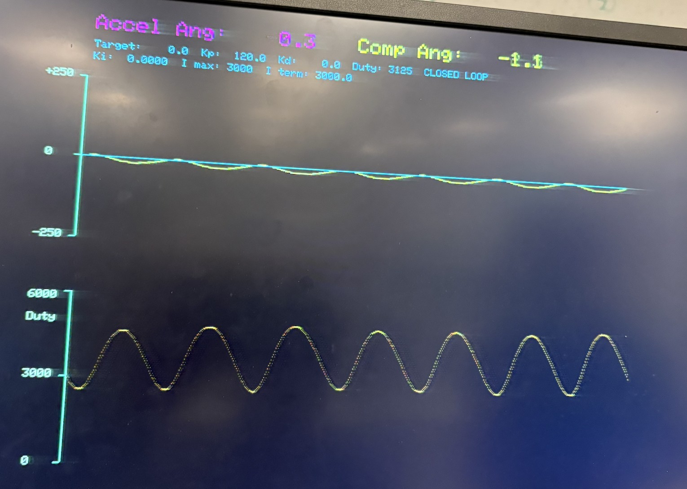
Figure 18. Early P-only test (Kp = 120, Ki = Kd = 0, target 0°), on an
older build with a ±250 angle axis. The arm oscillates steadily, about 6.5 cycles in 5.3 s (≈ 1.2 Hz):
the edge of stability. The I term was still 3000 from an earlier run, because at that time setting Ki = 0
did not clear it. The final code clears the I term when Ki is set to 0.
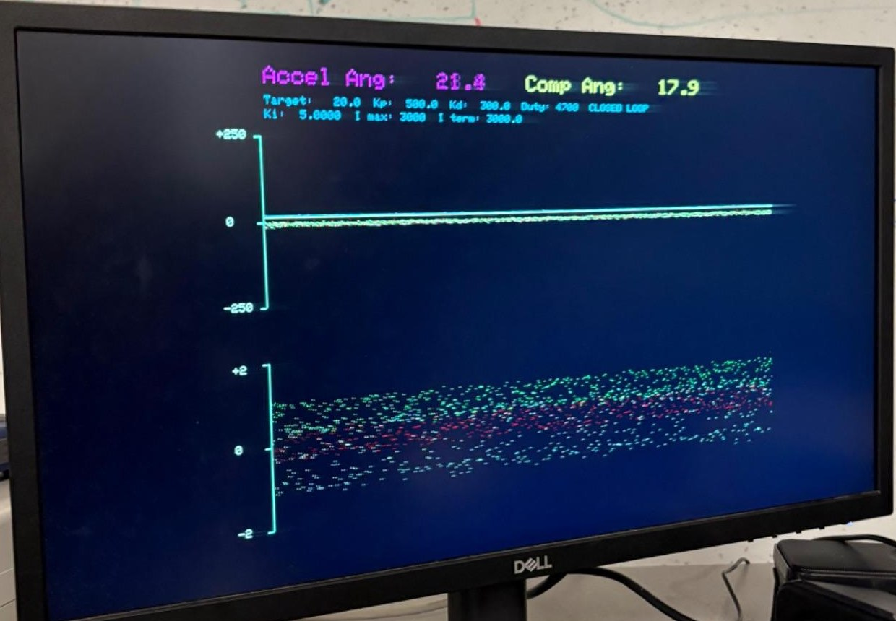
Figure 19. Early build with much larger gains (Kp = 500, Kd = 300,
Ki = 5). The bottom plot still showed the raw accelerometer axes (±2 g): with the motor running they are
spread across most of the range by vibration, while the complementary angle in the top plot is a clean line. This is
the motivation for the complementary filter in one picture.
6 Conclusion
Our helicopter met the lab requirements. The arm ran the full 0° / +30° / −30° / 0° demo on one
set of gains without a reset. Every step settled within 3.6 s, gains and target could be changed from the serial
terminal at any time, and the VGA showed the angle, target and motor command live. The results also lined up with the
theory. The complementary filter's 1 s crossover kept vibration out of the estimate. The steady integral equalled
the hover duty, as PID theory predicts. The asymmetric settling and hover duties are what the one-directional actuator
and the arm's offset centre of mass predict.
We learned how to fuse two imperfect sensors, how each PID term shapes the response, and why a motor needs
isolation, a flyback diode and a bypass capacitor. Most of our debugging went to the I2C start-up hang and to
fixed-point and axis conventions, not to the controller.
What we would change.
Plot a low-passed copy of the command (motor_disp, the course Display page's IIR) as the handout
asks, rather than the sampled raw command.
Calibrate the gyro bias at start-up (average a second of readings with the arm still), removing the τ·b offset of Section 2.2.
Add a feed-forward hover command based on the r cos φ + d sin φ model, so the integrator only trims the
remaining error. This should shorten the slow tails, especially after downward steps.
Move the printf on button events out of the ISR. Printing inside the 1 kHz interrupt can stretch one
control period.
Measure the arm length and mass so the plant model can be checked quantitatively.
7 Answers to the Lab Report Questions
The helicopter handout asks the report to include the following. Each answer is self-contained and points to the
supporting figures and tables.
Q1. A schematic of the circuit you built
See Figure 9, with the wiring in Table 6, Figure 12 and Figure 13. GPIO 4
(PWM) drives the 4N35's LED through 330 Ω. Its phototransistor switches the 12 V gate supply (through a kill
switch) onto the gate of the IRLB8721 MOSFET, with a 10 kΩ gate pull-down and a 1 MΩ base resistor for a
fast fall time. The motor runs from a separate 5 V supply with a 1N4001 flyback diode and a 0.1 µF ceramic
capacitor across it. The Pico and motor sides share no ground. The IMU (I2C0, GPIO 8/9), VGA (GPIO 16–21) and
demo button (GPIO 15) connect to the Pico as in Table 6.
Q2. VGA screen dumps of (1) motor control and (2) actual angle, including the four-angle demo
See Figure 14–Figure 17, one per step of the demo (0°, +30°, −30°, 0°), each paired
with a photo of the arm at that angle. In each, the top trace is the measured angle against the target and the bottom
trace is the motor command (0–6000). While the button is held the command is 0 and the arm hangs at −90°
(left edge of Figure 14). Every step shows the slew-limited ramp in the command, and the settled command
matches the integrator, as described in the captions.
Q3. How you selected the three PID gains
Starting values from units. We sized each gain so its term gives a sensible duty count:
Kp: a 90° error (hanging, target horizontal) should call for roughly full duty, so
Kp ≈ 6000/90 ≈ 67, i.e. tens.
Kd: the gyro rate in °/s is the same order of magnitude as the error in degrees, so Kd
is also tens. (The course page's "thousands" assumes differencing noisy ADC samples, not a gyro.)
Ki: the integrator adds Ki·e a thousand times a second, so Ki must be orders
of magnitude smaller; we started near 1/32.
Tuning procedure (the order from lecture and the PID notes), with what we looked for at each stage:
P only: raise Kp to find the edge between stability (oscillations die out and the arm settles) and
instability (oscillations grow into large swings). Kp = 120 gave steady oscillation at about 1.2 Hz
(Figure 18), so we backed off to Kp = 80, about two-thirds of that.
Add D until the oscillation stops. Our test: push the arm down below the target and let go. It should spring
back up, overshoot once and quickly settle to a stable position. We ended at Kd = 12.
Add I to remove the steady-state error that P and D leave and bring the arm onto the target. Raising
Ki reaches the target faster, but too much causes overshoot and slow, rolling oscillation (the integrator's
90° of phase lag). We settled on Ki = 0.2 (Ti = Kp/Ki = 0.4 s). At that rate a 5°
error grows the I term by 1000 counts per second, so it can build the roughly 3300-count hover command within a few
seconds.
Check the whole demo with the button and adjust. Conditional integration (Section 3.6) handled windup, so
we left i_max at 10000.
The live I-term readout on the VGA (Section 3.8) was the most useful tuning aid: at every steady angle it should
equal the duty, which confirms that P and D have done their job and only the integral is holding the arm up
(Figure 14–Figure 17).
Q4. What are the maximum/minimum angles that produce stable behaviour for your PID gains?
Maximum ≈ +50°; minimum −90° (0° = horizontal). The maximum depended on which 5 V motor
supply we used. Why the range is limited:
Minimum. −90° is the hanging rest position. For targets near it the required thrust goes to zero,
the controller output clamps at 0 and gravity holds the arm, so it is trivially stable. The serial interface accepts
targets down to −90°.
Maximum. Above the arm's balance point (horizontal for a point mass, somewhat higher for ours, Section 5.4),
gravity's stiffness is negative: tipping further up reduces the restoring gravity torque, so the controller must
supply all of the stability. The further above that point, the stronger this destabilising term (it grows like the sine
of the distance past the balance point), until the margin that Kd provides runs out.
Operating-point dependence. The plant gain 2KTω0/(mL) changes with angle, and one
fixed set of gains was tuned for the demo range around horizontal.
Supply dependence. A different supply changes thrust per duty count (thrust ∝ V²), which scales the
whole loop gain. The same gains then sit closer to or further from the stability edge, so the maximum angle moved.
Q5. What are the settling times at different angles?
Step
Settling time
Overshoot
−90° → 0° (release)
2.74 s
none
0° → +30°
2.38 s
≈ 16°
+30° → −30°
3.56 s
≈ 26°
−30° → 0°
0.98 s
≈ 4°
(Same data as Table 8.) Upward steps settle in about 1–2.7 s. The downward step is
slowest (3.56 s) because the motor can only cut thrust: gravity drives the fall, the arm undershoots, and the
integrator has to rebuild. The fastest step (−30° → 0°, 0.98 s) started with the integrator already close
to the hover value. The slowest upward step (release from −90°) started with the integrator at zero.
Q6. A heavily commented listing of your code
Appendix A lists imu_demo.c, mpu6050.c, mpu6050.h and CMakeLists.txt
exactly as built and demonstrated. The course VGA driver and protothreads header were used unchanged and are not listed.
Every change from the course MPU-6050 demo is marked in the comments (ADDED, CHANGED,
FIXED, REMOVED), and those sections are shaded in the listing. Sections 2–3 explain the
code's math and structure.
Q7. A prompt log from any AI tool used for code generation
Appendix B is the full log of our code-generation sessions with Claude Code (model: Claude Opus 5.5). It has 18 prompts
from Oct 21–22, 2026, with our prompts verbatim and Claude's responses. Totals: 401 prompt words and
1719 logged response words exchanged; 214 lines of code given. Suggested additions / deletions / modifications:
36 / 1 / 22. Accepted, meaning still in the final code: 29 / 1 / 19.
8 Work Distribution and AI Use
Amber, Ivan, and Zarif worked together on all parts of the lab. We frequently met outside of our lab sections, and
most of our work was done in person in the lab. Outside of the lab, we communicated frequently to ensure that we were
all aware of the progress that had been made and what the immediate next steps were.
AI use. We used Claude Code (Claude Opus 5.5) while writing the program. Every prompt and response is in
Appendix B, and the code it contributed is marked with ADDED / CHANGED / FIXED
comments (shaded in Appendix A). We also used Claude to help organise, typeset and edit this report from our notes,
draft report, photos, screenshots and measurements. Its code suggestions during report writing (a low-passed display
variable, an alternative button routine on GPIO 2 and extra comments) were not merged into our program. All measurements,
photos, screenshots and the hardware are ours.
References
V. H. Adams, PID control of a 1D helicopter (lab handout). https://vanhunteradams.com/Pico/Helicopter/Helicopter.html
V. H. Adams, Complementary filters. https://vanhunteradams.com/Pico/ReactionWheel/Complementary_Filters.html
V. H. Adams, Phenomenological introduction to PID controllers. https://vanhunteradams.com/PID/PID.html
V. H. Adams, Analytical introduction to PID controllers. https://vanhunteradams.com/PID/PID_Analytical.html
V. H. Adams, DC motor circuit and PWM. https://vanhunteradams.com/Pico/Helicopter/MotorCircuit.html
V. H. Adams, Data display. https://vanhunteradams.com/Pico/Helicopter/Display.html
V. H. Adams, Inter-Integrated Circuit (I2C). https://vanhunteradams.com/Protocols/I2C/I2C.html
V. H. Adams, MPU6050 IMU demo and PWM demo code. https://github.com/vha3/Hunter-Adams-RP2040-Demos
Raspberry Pi Ltd., RP2350 Datasheet (PWM and I2C chapters).
InvenSense, MPU-6000/MPU-6050 Register Map and Descriptions.
B. Land, ECE 4760/5730 course policy (lab report sections). https://people.ece.cornell.edu/land/courses/ece4760/EE4760_policy.html
Appendix A Commented Code Listing
These are the files exactly as built and demonstrated (Pico 2 / RP2350, Pico SDK 2.3.1). The program also uses the
course's VGA/vga16_graphics_v3.c/.h, the three VGA PIO programs and pt_cornell_rp2040_v1_4.h,
unchanged. Changes from the course MPU-6050 demo are marked in the comments with ADDED,
CHANGED, FIXED or REMOVED; these are the sections written with AI assistance (Appendix B)
and later edited by us. marks those lines. Comments are green.
# Add pico_multicore which is required for multicore functionality
40
target_link_libraries( MPU6050_IMU
41
pico_stdlib
42
pico_bootsel_via_double_reset
43
pico_multicore
44
hardware_pwm
45
hardware_dma
46
hardware_irq
47
hardware_adc
48
hardware_pio
49
hardware_sync
50
hardware_i2c
51
hardware_clocks)
52
53
# create map/bin/hex file etc.
54
pico_add_extra_outputs(MPU6050_IMU)
Appendix B AI Prompt Log
Tool: Claude Code in VS Code, model Claude Opus 5.5. Dates: October 21–22, 2026.
Source: the prompt log Claude kept in our project (MPU6050_IMU_Demo/PROMPT_LOG.md), reproduced
below. Prompts are verbatim, typos included. Responses are as recorded in that log. Claude kept the log as it went
(from prompt 9 onward, back-filling 1–8), so a response is sometimes a condensed version of the full chat reply.
How we counted.Words are counted from the log: our prompt, and Claude's recorded response (excluding
code). Code lines given counts the C lines in each response. For suggested changes, one addition,
deletion or modification is one distinct change to the program (e.g. a new serial command, a new ISR block, or one
edited statement), not one line. Accepted means the change is still present in the final
imu_demo.c (Appendix A), even if we edited it later. Changes we applied and later removed count as not accepted.
#
Date
Prompt (topic)
Prompt words
Response words
Code lines given
Suggested add / del / mod
Accepted add / del / mod
Notes
1
10/21
Integrate PWM fan control into the IMU demo
11
57
23
3 / 0 / 1
3 / 0 / 1
Kept. We later renamed the manual-duty command from p to n.
2
10/21
Comment which code was added
11
32
0
0 / 0 / 0
0 / 0 / 0
Comment markers only; kept (the ADDED / CHANGED markers in Appendix A).
3
10/21
Fan runs at max with duty cycle 0
23
69
0
0 / 0 / 0
0 / 0 / 0
Diagnosis only.
4
10/21
6000 also runs at full speed; PWM_Demo works
35
92
0
0 / 0 / 0
0 / 0 / 0
Diagnosis only (program hung in I2C setup).
5
10/21
Add a complementary filter and display it
14
80
38
9 / 0 / 0
7 / 0 / 0
#define PI and the magenta accel-angle trace were later removed.
6
10/21
VGA isn't displaying anything
10
100
5
0 / 1 / 1
0 / 1 / 1
Kept: local Q15 macros deleted, 180/π constant fixed.
7
10/21
Serial terminal broken too
10
60
29
4 / 0 / 2
0 / 0 / 0
WHO_AM_I check and imu_ok guards later removed by us; replaced by entry 10.
8
10/21
Plots all read 0
9
77
2
0 / 0 / 1
0 / 0 / 0
Removed together with the entry 7 check.
9
10/21
Create this prompt log
37
21
0
0 / 0 / 0
0 / 0 / 0
Created PROMPT_LOG.md.
10
10/21
VGA not displaying again (IMU wiring checked)
26
74
14
1 / 0 / 0
1 / 0 / 0
Kept: I2C bus recovery at start-up.
11
10/21
How does the complementary filter work / rotation about +y
30
192
7
1 / 0 / 5
1 / 0 / 5
Offered as a suggestion; we applied the axis change by hand (finished in entry 12).
12
10/21
Angles read 80–300° and don't track (arm rotates about +y)
75
105
12
0 / 0 / 4
0 / 0 / 4
Kept: az axis, +π removed, plot offset removed, seed re-enabled.
13
10/21
Closed-loop proportional control of the motor
13
147
34
7 / 0 / 3
7 / 0 / 3
Kept. We later renamed the Kp command from k to p.
14
10/22
How to tune Kp (bouncing vs. settling ~10° low)
39
134
0
1 / 0 / 0
0 / 0 / 0
PID + feed-forward sketch not used.
15
10/22
Add derivative control
23
104
18
3 / 0 / 2
3 / 0 / 2
Kept.
16
10/22
Clamp the duty cycle to 4500
9
39
8
1 / 0 / 2
1 / 0 / 2
Kept, but we later raised DUTY_MAX back to 6000.
17
10/22
Add integral control
6
147
24
6 / 0 / 1
6 / 0 / 1
Kept. We later raised i_max to 10000 and made i 0 clear the integrator.
Note: the demo-button sequence and the overcurrent-protection block (slew limit and conditional
integration) are also marked ADDED in Appendix A but were written after the last entry of
PROMPT_LOG.md and are not recorded there, so they are not counted in Table B1.
Full log
B.1 Integrate PWM fan control into the IMU demo 2026-10-21 · 11 prompt words · 57 response words
Our prompt (verbatim)
Can you integrate the pwm fan control into the imu demo
Claude's response (Claude Opus 5.5, Claude Code)
The IMU demo already set up the PWM slice on GPIO 4/5 (and used the PWM wrap interrupt to read the IMU at 1 kHz), but the duty cycle was stuck at 0. Merged the duty-cycle update from PWM_Demo/pwm-demo.c into the existing ISR and added a serial command p to set the duty cycle (0–6000). Built successfully.
Code (imu_demo.c):
// Globals
volatile int control ;
volatile int old_control ;
// In on_pwm_wrap()
if (control!=old_control) {
old_control = control ;
pwm_set_chan_level(slice_num, PWM_CHAN_A, control);
}
// In protothread_serial
else if (classifier=='p') {
sprintf(pt_serial_out_buffer, "duty cycle (0-%d): ", WRAPVAL);
serial_write ;
serial_read ;
sscanf(pt_serial_in_buffer,"%d", &test_in) ;
if (test_in >= 0 && test_in <= WRAPVAL) {
control = test_in ;
}
}
// In main()
gpio_set_function(PWM_OUT, GPIO_FUNC_PWM); // was hardcoded 4
B.2 Comment which code was added 2026-10-21 · 11 prompt words · 32 response words
Our prompt (verbatim)
Can you clearly comment which parts of the code you added
Claude's response (Claude Opus 5.5, Claude Code)
Wrapped each added block in // ===== ADDED: ... ===== / // ===== END ADDED ===== markers, and marked the one changed line with // CHANGED: was hardcoded 4, now uses PWM_OUT.
Code: comment markers only.
B.3 Fan runs at max with duty cycle 0 2026-10-21 · 23 prompt words · 69 response words
Our prompt (verbatim)
something is wrong with the pwm control. when inputtitng a duty cycle of 0 it is still running the fan at max value
Claude's response (Claude Opus 5.5, Claude Code)
Traced the code path. It correctly sets GPIO 4's level to 0, and the startup level is also 0, so the software logic looked right. Suggested hardware checks: does the fan run at full speed before any input, is the driver circuit inverting (fix: pwm_set_output_polarity(slice_num, true, false)), does PWM_Demo behave the same, is the fan on GPIO 4, is the MOSFET gate floating, and was the new .uf2 flashed.
Code: none.
B.4 6000 also runs at full speed; PWM_Demo works 2026-10-21 · 35 prompt words · 92 response words
Our prompt (verbatim)
6000 still seems to run it at full speed. running the PWM_Demo itself works and lets you change hte fan speed. could it be somehting changing the logic hwen merging the pwm code into imu?
Claude's response (Claude Opus 5.5, Claude Code)
Compared the merged code against PWM_Demo. The duty-cycle logic, pin, wrap and clock divider were identical. There were no pin conflicts (I2C on 8/9, VGA on 16–21, UART on 0/1), and both builds targeted the Pico 2 (RP2350). Concluded the IMU program probably never reached the PWM setup. main() sets up VGA and the IMU first, and mpu6050_reset() uses I2C writes with no timeout, which hang if the bus is stuck, so GPIO 4 would float. Asked whether the serial prompt and the VGA traces appear and whether the IMU was connected.
Code: none.
B.5 Add a complementary filter and display it 2026-10-21 · 14 prompt words · 80 response words
Our prompt (verbatim)
how do I properly add a complementary filter and see it on the screen
Claude's response (Claude Opus 5.5, Claude Code)
The user had started adding the filter lines, but the variables were undeclared and the low-pass filter was missing. Added the declarations, a first-order IIR low-pass filter (alpha = 1/16) on the accelerometer x/y, starting values seeded from the first reading, display buffers, magenta (accel-only) and yellow (complementary) traces on the top plot shifted by −180°, and a numeric text readout. Noted that the gyro sign, the axis choice, the 1 kHz timestep and the 0.999/0.001 blend may need tuning.
B.6 VGA isn't displaying anything 2026-10-21 · 10 prompt words · 100 response words
Our prompt (verbatim)
can you check for bugs the vga isn't displaying anything
Claude's response (Claude Opus 5.5, Claude Code)
Found two math bugs:
A local set of Q15 fixed-point macros (1.0 = 32768) was overriding the Q16 macros in mpu6050.h (1.0 = 65536), while mpu6050.c still produced Q16 data, so every value was misread by 2×. Removed the local macros.
multfix15(..., 180 / M_PI) truncated the constant to the integer 57. Replaced it with oneeightyoverpi.
Neither would blank the screen: drawPixel checks its bounds and the VGA driver is DMA-only. Concluded the program was likely hung in mpu6050_reset() before core 1 started, and suggested checking for the serial prompt, scoping GPIO 14/15, and checking the IMU wiring.
Code (imu_demo.c):
// FIXED: removed local Q15 fixed-point macros. mpu6050.c / mpu6050.h use
// 15.16 format (1.0 = 65536), so the IMU data must be read with those macros.
// FIXED: second argument must be fixed point (180/M_PI was truncated to the integer 57)
accel_angle = multfix15(float2fix15(atan2(-filtered_ax, filtered_ay) + PI), oneeightyoverpi);
B.7 Serial terminal broken too 2026-10-21 · 10 prompt words · 60 response words
Our prompt (verbatim)
the serial command terminal seems to be broken as well
Claude's response (Claude Opus 5.5, Claude Code)
The serial terminal, VGA and fan all failing together confirmed the program was hanging during startup in the I2C/IMU setup. Added a WHO_AM_I check with a timeout, an imu_ok flag that skips the IMU reset and the ISR reads if the IMU doesn't respond (so the timeouts can't starve core 0), and startup progress messages printed to the serial terminal.
Code (imu_demo.c):
// Global
volatile int imu_ok = 0 ;
// main(), before mpu6050_reset()
printf("\n\rVGA and I2C initialized\n\r") ;
uint8_t who_reg = 0x75 ;
uint8_t who_am_i = 0 ;
int w = i2c_write_timeout_us(I2C_CHAN, ADDRESS, &who_reg, 1, true, 1000) ;
int r = i2c_read_timeout_us(I2C_CHAN, ADDRESS, &who_am_i, 1, false, 1000) ;
if (w == 1 && r == 1 && who_am_i == 0x68) {
imu_ok = 1 ;
printf("MPU6050 found (WHO_AM_I = 0x%02x)\n\r", who_am_i) ;
}
else {
imu_ok = 0 ;
printf("ERROR: MPU6050 not responding (write=%d read=%d WHO_AM_I=0x%02x)\n\r", w, r, who_am_i) ;
printf("Check IMU power/ground, SDA on GPIO %d, SCL on GPIO %d\n\r", SDA_PIN, SCL_PIN) ;
}
if (imu_ok) {
mpu6050_reset();
mpu6050_read_raw(acceleration, gyro);
printf("MPU6050 reset done\n\r") ;
}
// ISR
if (imu_ok) mpu6050_read_raw(acceleration, gyro);
// After multicore_launch_core1()
printf("Core 1 launched, starting serial thread\n\r") ;
B.8 Plots all read 0 2026-10-21 · 9 prompt words · 77 response words
Our prompt (verbatim)
The plots are all just reading at 0 now
Claude's response (Claude Opus 5.5, Claude Code)
The WHO_AM_I check was too strict. Clone boards often report an ID other than 0x68 (such as 0x70, 0x72 or 0x98), so imu_ok stayed 0 and every IMU read was skipped. Relaxed the check to accept any device that acknowledges on I2C. Explained how to read the error codes in the ERROR message: -1 means the IMU didn't respond at its address, -2 means the bus is stuck (timeout). Also suggested checking the AD0 pin (address 0x69).
Code (imu_demo.c):
// Accept any device that answers: clone boards often report an ID other than 0x68
if (w == 1 && r == 1) {
B.9 Create this prompt log 2026-10-21 · 37 prompt words · 21 response words
Our prompt (verbatim)
Can you record all prompts in a markdown file for the previous prompts and for future prompts. And keep a prompt log of the promt and the answer and code if generated as well as the date.
Claude's response (Claude Opus 5.5, Claude Code)
Created this file (PROMPT_LOG.md) with every prompt so far, and saved a memory note so future sessions keep appending entries here.
Code: none (this file).
B.10 VGA not displaying again (IMU wiring checked) 2026-10-21 · 26 prompt words · 74 response words
Our prompt (verbatim)
The VGA screen is not displaying again. previously this was because the imu wiring became loose but now I checked this and its still not working.
Claude's response (Claude Opus 5.5, Claude Code)
The user had removed the WHO_AM_I check and the imu_ok guards, so mpu6050_reset() could block forever again. The likely cause was a stuck I2C bus: when the Pico resets mid-transfer, the still-powered MPU6050 can hold SDA low, and reflashing doesn't clear it (a power cycle does). Suggested unplugging USB as a quick test, and added a standard I2C bus recovery at startup (up to 9 SCL pulses) that prints whether the bus is free.
B.11 How does the complementary filter work / rotation about +y 2026-10-21 · 30 prompt words · 192 response words
Our prompt (verbatim)
Can you explain how the complementary filter works? What should we see the accel angle and complementary angle change as we rotate about the + y axis of the imu
Claude's response (Claude Opus 5.5, Claude Code)
Concept: the accel angle (from gravity) never drifts but is noisy, and the gyro integral is smooth but drifts. The filter angle = 0.999*(angle + rate*dt) + 0.001*accel_angle acts as a high-pass on the gyro and a low-pass on the accel, with about a 1 s crossover (dt/0.001).
Current code: it measures rotation about z (accel x/y, gyro z). Rotating about +y moves gravity between x and z instead, so with a flat IMU the accel angle flips between about 90° and 270°, and the complementary angle gets no gyro input and just drifts slowly toward it. The start-up seed is also commented out, so the complementary angle starts at 0 and takes about 3–5 s to settle.
For +y rotation: use accel x/z and gyro y (code below, suggested only, not applied). Expected behaviour: flat = 0°, a +30° tilt reads +30° on both traces, accel is jittery while the complementary trace is smooth, a fast tilt is tracked with no lag, vibration spikes only the accel, and there's no long-term drift. If the complementary trace moves the wrong way and then creeps back, flip the gyro sign.
B.12 Angles read 80–300° and don't track (arm rotates about +y) 2026-10-21 · 75 prompt words · 105 response words
Our prompt (verbatim)
The IMU setup is an arm that rotates about the +y axis from -180 to 180 deg in the z axis, so the IMU chip lays flat when the arm is held horizontally in the middle of its rotation range. Right now accel ang and comp ang dont seem to make sense because htey range from 80 to 300 deg and dont really track the intermediate movement. is the orientation in the code still wrong?
Claude's response (Claude Opus 5.5, Claude Code)
Yes. The user had renamed the variable to filtered_az and switched to gyro y with a +, but filtered_az was still filtering acceleration[1] (the y axis, which is the rotation axis and stays near 0). With a near-zero denominator, atan2 flipped toward ±90° (90°/270° after the +PI offset), which matched the 80–300° symptom. Fixed it to use acceleration[2], removed the +PI so flat = 0° and the range is ±180°, removed the -180. plot shift, and re-enabled the start-up seed using the z axis. It builds cleanly. Noted the wraparound at ±180° (arm pointing straight down), where the accel angle jumps between +180 and −180.
B.13 Closed-loop proportional control of the motor 2026-10-21 · 13 prompt words · 147 response words
Our prompt (verbatim)
How do we add closed loop proportional control of the motor using PWM?
Claude's response (Claude Opus 5.5, Claude Code)
Added a P controller in the 1 kHz IMU ISR, right after the complementary angle update: error = desired - complementary_angle, duty = Kp * error, clamped to 0..6000 (the fan only pushes one way). Moved the PWM level update after the controller so each new value is applied in the same interrupt. Added serial commands: a target angle, k Kp, c closed loop on/off (turning it off sets the duty to 0), and p manual duty, which now turns the closed loop off. Added a light-blue target line on the top plot and a readout of target, Kp, duty and mode. Enlarged screentext from 40 to 80 chars, because the readout line would have overflowed it. Explained that a P-only controller leaves a steady-state error because it needs a nonzero error to hold the arm up against gravity, which is what the I term will fix.
Code (imu_demo.c):
// Globals
volatile int closed_loop = 0 ;
volatile fix15 desired_angle = 0 ;
volatile fix15 Kp = int2fix15(100) ;
fix15 angle_error ;
char screentext[80];
// ISR, after complementary filter
if (closed_loop) {
angle_error = desired_angle - complementary_angle ;
int u = (int)((((long long)Kp) * ((long long)angle_error)) >> 32) ;
if (u < 0) u = 0 ;
if (u > WRAPVAL) u = WRAPVAL ;
control = u ;
}
if (control!=old_control) {
old_control = control ;
pwm_set_chan_level(slice_num, PWM_CHAN_A, control);
}
// Draw thread
drawHLine(LEFT_EDGE, (TOP_PLOT_BOTTOM -
(int)(NEW_RANGE*((float)((fix2float15(desired_angle))-OLD_MIN)/OLD_RANGE))), PLOT_WIDTH, LIGHT_BLUE) ;
setTextColor(LIGHT_BLUE) ;
setCursor(85, 45) ;
sprintf(screentext, "Target: %6.1f Kp: %6.1f Duty: %4d %s",
fix2float15(desired_angle), fix2float15(Kp), control, closed_loop ? "CLOSED LOOP" : "MANUAL") ;
writeString(screentext) ;
// Serial thread
else if (classifier=='a') { /* read float -> desired_angle (-180..180) */ }
else if (classifier=='k') { /* read float -> Kp (0..6000) */ }
else if (classifier=='c') { /* 1 = closed_loop on, 0 = off and control = 0 */ }
// 'p' now also sets closed_loop = 0
B.14 How to tune Kp (bouncing vs. settling ~10° low) 2026-10-22 · 39 prompt words · 134 response words
Our prompt (verbatim)
We added proportional closed loop control. how do we tune kp for the fan to drive the arm to a specified angle? Sometimes it bounces and sometimes its not strong enough to reach the desired angle (~10 deg lower).
Claude's response (Claude Opus 5.5, Claude Code)
Both symptoms are limits of P-only control, so no single Kp fixes both. The arm needs a nonzero holding duty against gravity, so P settles where error_ss = u_hold / Kp (can be checked by finding the holding duty with p). Raising Kp shrinks that error, but the arm is a lightly damped pendulum with fan lag, so it overshoots and oscillates, and the u < 0 clamp lets it free-fall on overshoot. Tuning procedure: raise Kp to sustained oscillation and use about half; add D from the gyro rate to damp it (lets Kp go higher); then add I with anti-windup, or a feedforward holding duty u_ff, to remove the offset. Watch the duty readout: swinging 0↔6000 means the gain is too high, pinned at 6000 means the fan can't reach the angle.
Code (suggested, not applied): PID + feedforward sketch for the ISR (Kd, Ki, u_ff, clamped error_integral, d = Kd * gyro[1] subtracted).
B.15 Add derivative control 2026-10-22 · 23 prompt words · 104 response words
Our prompt (verbatim)
can you add derivative control? also make sure to comment the sections you are changing and add the change log to the markdowns.
Claude's response (Claude Opus 5.5, Claude Code)
Added a D term to the ISR controller, using the gyro y rate directly (d(error)/dt = −gyro[1] because the target is constant), which avoids the noise of differencing the angle estimate, as recommended in lecture. The control law is now u = Kp*error − Kd*gyro[1], still clamped to 0..6000. Added a d serial command (0–6000) to set Kd, which defaults to 0 so behaviour is unchanged until it is set, and added Kd to the VGA readout. Marked the changes with ADDED / CHANGED comments, added an implementation change log section to pid_lecture_breakdown.md, and logged the previous (tuning) prompt as entry 14. Builds cleanly.
Code (imu_demo.c):
// Globals
volatile fix15 Kd = int2fix15(0) ; // gain (duty counts per deg/s, 15.16), 0 = off
// ISR controller
angle_error = desired_angle - complementary_angle ;
long long p_term = ((long long)Kp) * ((long long)angle_error) ;
long long d_term = ((long long)Kd) * ((long long)gyro[1]) ;
int u = (int)((p_term - d_term) >> 32) ; // CHANGED: was Kp * error only
if (u < 0) u = 0 ;
if (u > WRAPVAL) u = WRAPVAL ;
control = u ;
// Draw thread readout
sprintf(screentext, "Target: %6.1f Kp: %6.1f Kd: %6.1f Duty: %4d %s",
fix2float15(desired_angle), fix2float15(Kp), fix2float15(Kd), control, closed_loop ? "CLOSED LOOP" : "MANUAL") ;
// Serial thread
else if (classifier=='d') { /* read float -> Kd (0..6000) */ }
B.16 Clamp the duty cycle to 4500 2026-10-22 · 9 prompt words · 39 response words
Our prompt (verbatim)
can you clamp the duty cycle to max 4500
Claude's response (Claude Opus 5.5, Claude Code)
Added #define DUTY_MAX 4500. The closed-loop clamp now limits u to DUTY_MAX instead of WRAPVAL (6000), and the manual p command only accepts 0–4500. The PWM period (WRAPVAL = 6000) is unchanged, so 4500 is 75% duty. Builds cleanly.
Code (imu_demo.c):
#define DUTY_MAX 4500
// ISR controller
if (u > DUTY_MAX) u = DUTY_MAX ; // CHANGED: was WRAPVAL (6000)
// Serial 'p' command
sprintf(pt_serial_out_buffer, "duty cycle (0-%d): ", DUTY_MAX);
if (test_in >= 0 && test_in <= DUTY_MAX) {
B.17 Add integral control 2026-10-22 · 6 prompt words · 147 response words
Our prompt (verbatim)
Now can you add integral control
Claude's response (Claude Opus 5.5, Claude Code)
Added an I term to the ISR controller, making it a full PID: u = Kp*error − Kd*gyro[1] + i_term, clamped to 0..DUTY_MAX. Every 1 ms sample the controller accumulates Ki*error (rather than the raw error), so the sum is already in duty counts. That means it can't overflow 15.16 fixed point, and changing Ki doesn't make the output jump. Anti-windup: i_term is capped at i_max (default 3000; the lecture says to set it a little above the duty that holds the arm at the target) and floored at 0, because the fan can't pull down. The integrator resets to 0 whenever closed loop is off (including after p or c 0). New serial commands: i sets Ki (default 0 = off, suggested start ~0.03) and m sets i_max (0–DUTY_MAX). Added a second VGA readout line showing Ki, I max and the live I term. Builds cleanly.
Code (imu_demo.c):
// Globals
volatile fix15 Ki = int2fix15(0) ;
volatile int i_max = 3000 ;
volatile fix15 i_term = 0 ;
// ISR controller
i_term += multfix15(Ki, angle_error) ;
if (i_term > int2fix15(i_max)) i_term = int2fix15(i_max) ;
if (i_term < 0) i_term = 0 ;
int u = (int)((p_term - d_term) >> 32) + fix2int15(i_term) ;
...
else {
i_term = 0 ; // controller off -> clear integrator
}
// Draw thread
setCursor(85, 57) ;
sprintf(screentext, "Ki: %7.4f I max: %4d I term: %6.1f",
fix2float15(Ki), i_max, fix2float15(i_term)) ;
writeString(screentext) ;
// Serial thread
else if (classifier=='i') { /* read float -> Ki (0..100) */ }
else if (classifier=='m') { /* read int -> i_max (0..DUTY_MAX) */ }
B.18 Tuning PID for fast response 2026-10-22 · 20 prompt words · 189 response words
Our prompt (verbatim)
If we want the arm to be very fast response to angle changes, how should we tune the pid parameters
Claude's response (Claude Opus 5.5, Claude Code)
Speed comes from Kp, and Kd is what lets Kp go high without bouncing. Aim for slight overshoot (about 5–10%), which settles faster than a fully damped response. Procedure, using step tests (e.g. target 0 → 30°): raise Kp until it overshoots, raise Kd until the overshoot is damped, and repeat. Stop when either (a) the duty slams between 0 and DUTY_MAX during a step, which means the actuator is saturated and more gain won't help, or (b) the fan chatters at rest, which means Kd is amplifying gyro noise (a low-pass filter on gyro[1] would help). Add Ki last and keep it small. I is slow and winds up during large steps, which causes overshoot, so keep i_max tight (holding duty + margin). Physical limits: the rise is limited by DUTY_MAX (4500) and the fall by gravity, because the fan can't pull down, so the response is asymmetric. Options for more speed: feedforward of the holding duty, so P doesn't have to do that job; integrating only when the error is small (conditional integration); raising DUTY_MAX. Use t to slow the plot scroll and see the step response.